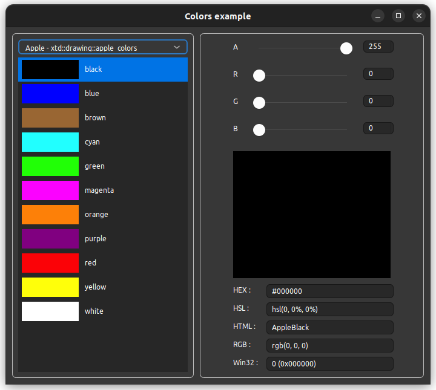

|
xtd
0.2.0
|
Loading...
Searching...
No Matches
colors.cpp
demonstrates the use of xtd::forms::user_control control with xtd::drawing::color.
- Windows

- macOS
- Gnome

#include <xtd/xtd>
using namespace xtd;
using namespace xtd::drawing;
using namespace xtd::drawing::drawing2d;
using namespace xtd::forms;
namespace examples {
public:
color_panel() {
size({200, 30});
color(drawing::color::empty);
}
user_control::on_paint(e);
e.graphics().fill_rectangle(solid_brush(system_colors::control()), 0, 0, 100, e.clip_rectangle().height());
e.graphics().fill_rectangle(solid_brush(color_), 0, 0, 100, e.clip_rectangle().height());
e.graphics().draw_string(color_.name(), font(), solid_brush(fore_color()), 120, (e.clip_rectangle().height() - e.graphics().measure_string(color_.name(), font()).height()) / 2);
}
if (color_ != value) {
color_ = value;
invalidate();
}
}
private:
drawing::color color_;
};
public:
color_chooser() {
border_style(forms::border_style::fixed_3d);
back_color(system_colors::window());
fore_color(system_colors::window_text());
auto_scroll(true);
for (auto iterator = system_colors::get_colors().rbegin(); iterator != system_colors::get_colors().rend(); ++iterator)
add_color_panel(*iterator);
for (auto iterator = colors::get_colors().rbegin(); iterator != colors::get_colors().rend(); ++iterator)
add_color_panel(*iterator);
}
size_t selected_index() const {return selected_index_;}
void selected_index(size_t value) {
if (selected_index_ != value) {
selected_index_ = value;
on_selected_index_changed(event_args::empty);
}
}
if (selected_color_ != value) {
selected_color_ = value;
on_selected_color_changed(event_args::empty);
}
}
event<color_chooser, event_handler> selected_index_changed;
event<color_chooser, event_handler> selected_color_changed;
static const size_t npos = std::numeric_limits<size_t>::max();
private:
auto color_panel = std::make_shared<color_chooser::color_panel>();
color_panel->dock(dock_style::top);
color_panel->color(color);
color_panel->tag(colors_.size());
colors_.push_back(color_panel);
controls().push_back(*color_panel);
selected_index(colors_.size() - 1 - std::any_cast<size_t>(as<control>(sender).tag()));
};
}
if (previous_selected_index_ != npos) colors_[colors_.size() - 1 - previous_selected_index_]->back_color(back_color());
if (previous_selected_index_ != npos) colors_[colors_.size() - 1 - previous_selected_index_]->fore_color(fore_color());
if (selected_index_ == npos)
selected_color(color::empty);
else {
colors_[colors_.size() - 1 - selected_index_]->back_color(system_colors::accent());
colors_[colors_.size() - 1 - selected_index_]->fore_color(system_colors::accent_text());
selected_color(colors_[colors_.size() - 1 - selected_index_]->color());
}
previous_selected_index_ = selected_index_;
selected_index_changed(*this, e);
}
selected_index(colors_.size() - 1 - std::any_cast<size_t>(color->tag()));
break;
}
selected_color_changed(*this, e);
}
size_t previous_selected_index_ = npos;
size_t selected_index_ = npos;
drawing::color selected_color_ = drawing::color::empty;
std::vector<std::shared_ptr<color_panel>> colors_;
};
public:
color_editor() {
border_style(forms::border_style::fixed_3d);
size({300, 400});
minimum_size(size());
label_alpha.parent(*this);
label_alpha.location({10, 15});
label_alpha.auto_size(true);
label_alpha.text("A");
track_bar_alpha.parent(*this);
track_bar_alpha.location({40, 12});
track_bar_alpha.auto_size(false);
track_bar_alpha.maximum(255);
track_bar_alpha.size({190, 25});
track_bar_alpha.tick_style(tick_style::none);
track_bar_alpha.anchor(anchor_styles::top | anchor_styles::left | anchor_styles::right);
track_bar_alpha.value_changed += [&] {
color(drawing::color::from_argb(as<unsigned char>(track_bar_alpha.value()), color_.r(), color_.g(), color_.b()));
};
numeric_up_down_alpha.parent(*this);
numeric_up_down_alpha.bounds({240, 12, 50, 20});
numeric_up_down_alpha.minimum(0);
numeric_up_down_alpha.maximum(255);
numeric_up_down_alpha.anchor(anchor_styles::top | anchor_styles::right);
numeric_up_down_alpha.value_changed += [&] {
color(drawing::color::from_argb(as<unsigned char>(numeric_up_down_alpha.value()), color_.r(), color_.g(), color_.b()));
};
label_red.parent(*this);
label_red.location({10, 60});
label_red.auto_size(true);
label_red.text("R");
track_bar_red.parent(*this);
track_bar_red.location({40, 57});
track_bar_red.auto_size(false);
track_bar_red.maximum(255);
track_bar_red.size({190, 25});
track_bar_red.tick_style(tick_style::none);
track_bar_red.anchor(anchor_styles::top | anchor_styles::left | anchor_styles::right);
track_bar_red.value_changed += [&] {
color(drawing::color::from_argb(color_.a(), as<unsigned char>(track_bar_red.value()), color_.g(), color_.b()));
};
numeric_up_down_red.parent(*this);
numeric_up_down_red.bounds({240, 57, 50, 20});
numeric_up_down_red.minimum(0);
numeric_up_down_red.maximum(255);
numeric_up_down_red.anchor(anchor_styles::top | anchor_styles::right);
numeric_up_down_red.value_changed += [&] {
color(drawing::color::from_argb(color_.a(), as<unsigned char>(numeric_up_down_red.value()), color_.g(), color_.b()));
};
label_green.parent(*this);
label_green.location({10, 105});
label_green.auto_size(true);
label_green.text("G");
track_bar_green.parent(*this);
track_bar_green.location({40, 102});
track_bar_green.auto_size(false);
track_bar_green.maximum(255);
track_bar_green.size({190, 25});
track_bar_green.tick_style(tick_style::none);
track_bar_green.anchor(anchor_styles::top | anchor_styles::left | anchor_styles::right);
track_bar_green.value_changed += [&] {
color(drawing::color::from_argb(color_.a(), color_.r(), as<unsigned char>(track_bar_green.value()), color_.b()));
};
numeric_up_down_green.parent(*this);
numeric_up_down_green.bounds({240, 102, 50, 20});
numeric_up_down_green.minimum(0);
numeric_up_down_green.maximum(255);
numeric_up_down_green.anchor(anchor_styles::top | anchor_styles::right);
numeric_up_down_green.value_changed += [&] {
color(drawing::color::from_argb(color_.a(), color_.r(), as<unsigned char>(numeric_up_down_green.value()), color_.b()));
};
label_blue.parent(*this);
label_blue.location({10, 150});
label_blue.auto_size(true);
label_blue.text("B");
track_bar_blue.parent(*this);
track_bar_blue.location({40, 147});
track_bar_blue.auto_size(false);
track_bar_blue.maximum(255);
track_bar_blue.size({190, 25});
track_bar_blue.tick_style(tick_style::none);
track_bar_blue.anchor(anchor_styles::top | anchor_styles::left | anchor_styles::right);
track_bar_blue.value_changed += [&] {
color(drawing::color::from_argb(color_.a(), color_.r(), color_.g(), as<unsigned char>(track_bar_blue.value())));
};
numeric_up_down_blue.parent(*this);
numeric_up_down_blue.bounds({240, 147, 50, 20});
numeric_up_down_blue.minimum(0);
numeric_up_down_blue.maximum(255);
numeric_up_down_blue.anchor(anchor_styles::top | anchor_styles::right);
numeric_up_down_blue.value_changed += [&] {
color(drawing::color::from_argb(color_.a(), color_.r(), color_.g(), as<unsigned char>(numeric_up_down_blue.value())));
};
panel_color_box.parent(*this);
panel_color_box.location({55, 195});
panel_color_box.size({190, 190});
panel_color_box.double_buffered(true);
panel_color_box.border_style(forms::border_style::fixed_3d);
panel_color_box.anchor(anchor_styles::left | anchor_styles::top | anchor_styles::right | anchor_styles::bottom);
panel_color_box.paint += [&](object& sender, paint_event_args& e) {
e.graphics().fill_rectangle(hatch_brush(hatch_style::wide_checker_board, color::from_argb(0x54, 0x54, 0x54), color::from_argb(0xA8, 0xA8, 0xA8)), e.clip_rectangle());
e.graphics().fill_rectangle(solid_brush(color_), e.clip_rectangle());
control_paint::draw_border(panel_color_box, e.graphics(), panel_color_box.border_style(), panel_color_box.border_sides(), application::style_sheet().system_colors().control_text(), e.clip_rectangle());
};
}
if (color_ != value) {
color_ = value;
on_color_changed(event_args::empty);
}
}
event<color_editor, event_handler> color_changed;
protected:
panel_color_box.invalidate();
track_bar_alpha.value(color_.a());
numeric_up_down_alpha.value(color_.a());
track_bar_red.value(color_.r());
numeric_up_down_red.value(color_.r());
track_bar_green.value(color_.g());
numeric_up_down_green.value(color_.g());
track_bar_blue.value(color_.b());
numeric_up_down_blue.value(color_.b());
color_changed(*this, e);
}
private:
void on_argb_changed() {
color(drawing::color::from_argb(as<unsigned char>(track_bar_alpha.value()), as<unsigned char>(track_bar_red.value()), as<unsigned char>(track_bar_green.value()), as<unsigned char>(track_bar_blue.value())));
}
label label_alpha;
label label_red;
label label_green;
label label_blue;
track_bar track_bar_alpha;
track_bar track_bar_red;
track_bar track_bar_green;
track_bar track_bar_blue;
numeric_up_down numeric_up_down_alpha;
numeric_up_down numeric_up_down_red;
numeric_up_down numeric_up_down_green;
numeric_up_down numeric_up_down_blue;
panel panel_color_box;
drawing::color color_ = color::empty;
};
public:
main_form() {
text("Colors example");
start_position(form_start_position::manual);
location({300, 200});
client_size({640, 420});
colors.location({10, 10});
colors.size({300, 400});
colors.anchor(anchor_styles::left | anchor_styles::top | anchor_styles::bottom);
colors.selected_color_changed += [&] {
editor.color(colors.selected_color());
};
editor.parent(*this);
editor.location({330, 10});
editor.size({300, 400});
editor.anchor(anchor_styles::left | anchor_styles::top | anchor_styles::right | anchor_styles::bottom);
colors.selected_index(0);
}
private:
color_chooser colors;
color_editor editor;
};
}
auto main()->int {
application::run(examples::main_form());
}
colors for all the standard colors. This class cannot be inherited.
Definition: colors.h:26
Defines a rectangular xtd::drawing::brush with a hatch style, a foreground color, and a background co...
Definition: hatch_brush.h:32
Defines a particular format for text, including font face, size, and style attributes....
Definition: font.h:45
Defines a xtd::drawing::brush of a single color. Brushes are used to fill graphics shapes,...
Definition: solid_brush.h:30
Represents the base class for classes that contain event data, and provides a value to use for events...
Definition: event_args.h:18
Represents a window or dialog box that makes up an application's user interface.
Definition: form.h:65
Represents a standard Windows numeric up down.
Definition: numeric_up_down.h:46
border_style
Specifies the border style for a control.
Definition: border_style.h:18
The xtd::drawing::drawing2d namespace provides advanced two-dimensional and vector graphics functiona...
Definition: compositing_mode.h:12
The xtd::drawing namespace provides access to GDI+ basic graphics functionality. More advanced functi...
Definition: basic_colors.h:13
The xtd::forms namespace contains classes for creating Windows-based applications that take full adva...
Definition: about_box.h:13
The xtd namespace contains all fundamental classes to access Hardware, Os, System,...
Definition: system_report.h:17
Generated on Tue Apr 4 2023 21:13:55 for xtd by Gammasoft. All rights reserved.